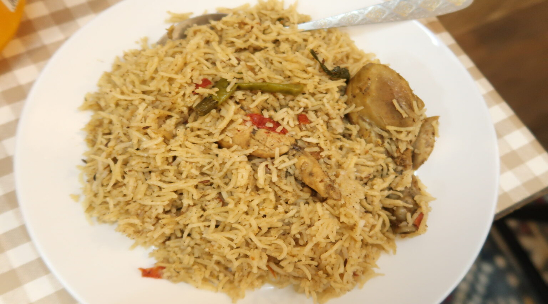

Chicken Pulao

Description
This method uses the traditional yakhni method of making Pilau.
Yakhni literally means broth or soup in Urdu. In this method, we cook up a beautiful broth using the chicken,
all the whole spices, garlic and onions. We will reserve this broth for later – we go on to frying onions
in glorious ghee until they are golden,
before adding in the chicken from the broth until the chicken becomes golden too.
Then we go on to adding the broth, and then the basmati rice and cooking until done.
This leaves us with a deeply aromatic and flavourful rice dish which will
likely become a family favourite.
Ingredients
- 300 g Rice
- 50 ml Olive Oil
- 1 Onions
- 1 tsp Salt
- 1 tsp Ginger Paste
- 1 tsp Garlic Paste
- 1 tsp Garam Masala
- 1 tsp Crushed Chillies
- 1 tsp Peppercorn
- 2 Bay Leaf
- 2 tsp Cumin Seeds zeera
- 2 Green Chillies
- 600 ml Water
- 750 g Chicken
Steps
- In a small bowl wash the rice then soak for at least 30 minutes
- Whilst the rice is soaking heat the oil in a pan on medium heat until hot
- Add the whole black pepper, cumin seeds and bay leaves then sauté for 1-2 minutes
- Add the finely sliced onions then cook on medium heat for 6-8 minutes until browned
- Add 2 tablespoons of water then cook for 1-2 minutes – the colour of the onions at this point will determine the end colour of the rice
- Add the ginger paste, garlic paste, and crushed chillies then sauté for a further 1-2 minutes
- Add the chicken and cook for 4-5 minutes
- Add the salt, garam masala and green chilli then cook for 6-8 minutes on medium heat
- Add the water and cook on medium heat for a further 6-8 minutes
- Add the rice and cook for 6-8 minutes on high heat until the majority of the water is absorbed
- Cover and cook on low heat for another 15 minutes
- Serve alongside some homemade raita and enjoy!